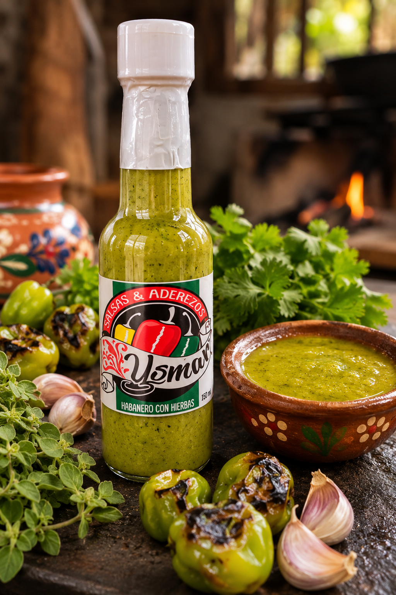
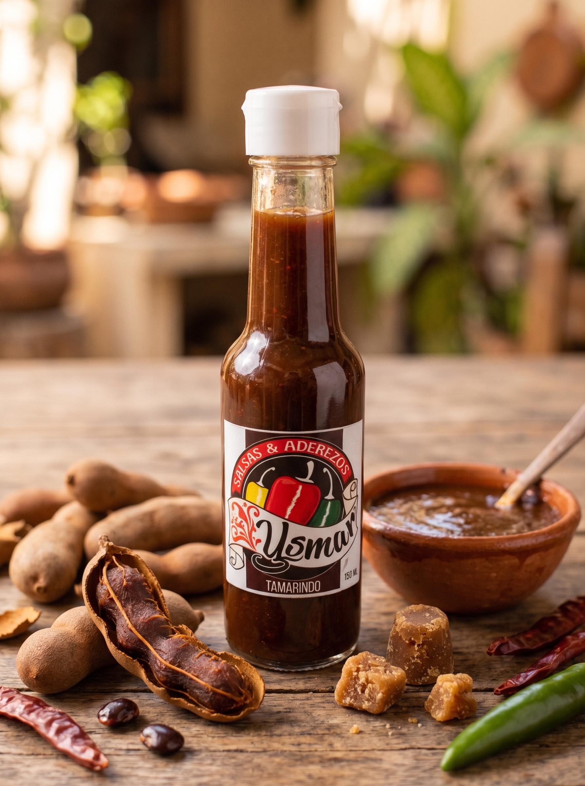
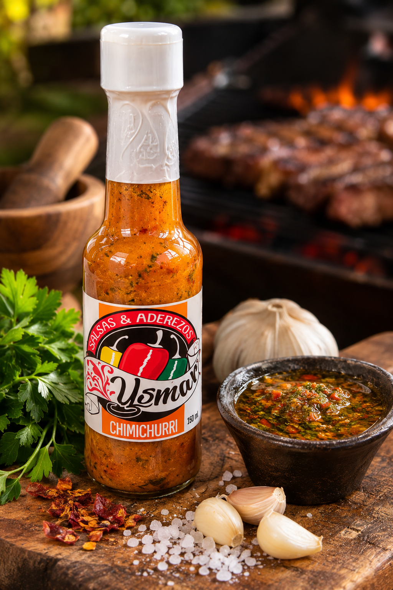
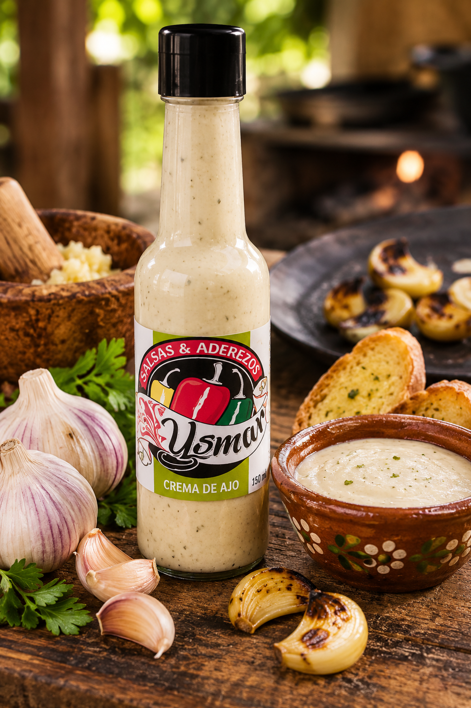

Nuestros Productos
Descubre nuestra amplia gama de salsas y aderezos artesanales
Habanero con hierbas
El rey de la casa. El picor inconfundible del habanero tatemado, balanceado a la perfección con una fina selección de hierbas aromáticas. Un toque intenso y tradicional, indispensable para darle vida a tus tacos, caldos y guisos de todos los días.

Salsa de Tamarindo
El equilibrio perfecto entre lo dulce, lo acidito y el nivel de picor exacto. Es una explosión de sabor tropical, ideal para bañar alitas, costillas, o para darle un giro atrevido y delicioso a tus botanas del fin de semana.

Aderezo Chimichurri
El alma de la carnita asada. Una mezcla artesanal muy fresca de perejil, ajo, aceite y especias. Realza al instante los jugos de cualquier corte de carne, choripanes o parrilladas. Si vas a prender el carbón, este frasco no te puede faltar.

Crema de Ajo
Suave, rica y con un sabor a ajo tostado que enamora desde la primera mordida. Úsala como el dip definitivo para tus papas a la francesa, orillas de pizza, o para llevar los panes de tus hamburguesas a un nivel de restaurante gourmet.
